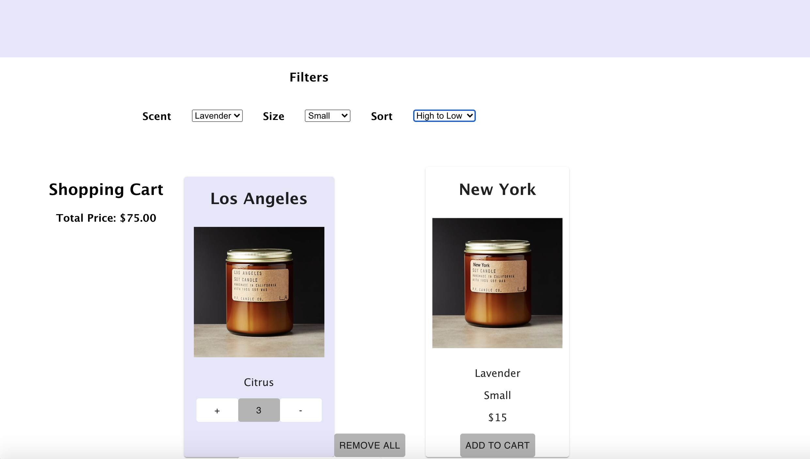

The goal of this project was to create an application using react. React is a front end, JavaScript library that
is used for
building user interfaces or components of these. The interface had to contain two filtering and one sorting
mechanism, an aggregator section,
and a minimum of 12 items displayed. Each item had to contain a picture of the product.
The interface I chose to create was a candle shop called Candle Co. This page consists of two main sections, the
home page (pictured above) and the product
display (pictured below). Moreover, the application displays 14 candles, each of which represents a city from
around the world. Some of these are New York, Paris, Tokyo, and Helsinki.
Development
Context
About the Interface
This user interface consists of 2 filtering options and one sorting option. All 3 of these are under the title
'Filters'. The user can filter the candles by scent or by size, or they can sort the candles
by their price being from lowest to highest or vice versa.
Furthermore, below the Filters, there is the section where the products are displayed. The candles are aligned in three rows. On the upper left part of the display is the shopping cart. This has the label 'Shopping Cart', and it displays the sum of the Total Price of the items in the cart. When an item is added to the cart, this item is displayed in the cart and denoted by a lavender background instead of white like in the display. Additionally, when an item is added to the cart, three other buttons appear: a '+' that adds one more of this same item to the cart, a '-' that removes one of this item from the cart, and 'Remove All' that clears the cart.
When an item is added to the shopping cart, and the sorting filters are applies, the interface looks like this:

Furthermore, below the Filters, there is the section where the products are displayed. The candles are aligned in three rows. On the upper left part of the display is the shopping cart. This has the label 'Shopping Cart', and it displays the sum of the Total Price of the items in the cart. When an item is added to the cart, this item is displayed in the cart and denoted by a lavender background instead of white like in the display. Additionally, when an item is added to the cart, three other buttons appear: a '+' that adds one more of this same item to the cart, a '-' that removes one of this item from the cart, and 'Remove All' that clears the cart.
When an item is added to the shopping cart, and the sorting filters are applies, the interface looks like this:
Links
Below you can find the link to the GitHub Repository where the code is available, and the link to the interface,
Candle Co.
Conclusion and Take Aways
In conclusion, it was very rewarding using React to create this interface.
React faciliated the implementation of this interface.
Moreover, this project challenged me to create features I had not implemented in the past.